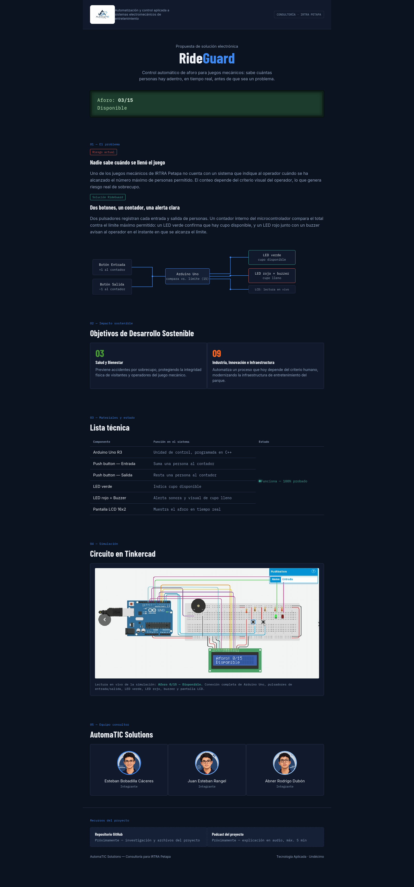

Control de Aforo Automatizado en Juegos Mecánicos
Implementación de lógica de control en tiempo real para la optimización operativa en IRTRA Petapa.
Planteamiento del Proyecto
Problemática Operacional
En atracciones mecánicas de alto flujo de visitantes, la verificación del aforo depende tradicionalmente del conteo visual o manual por parte del operador. Esta modalidad presenta un margen crítico de error humano, exponiendo el juego mecánico a situaciones de sobrecupo, desgaste prematuro de la estructura y potenciales riesgos a la integridad física de los usuarios.
Solución de Ingeniería Desarrollada
Diseñamos un sistema embebido de respuesta inmediata basado en un microcontrolador programado en C++. Dos pulsadores con filtrado de rebote (debounce) registran entradas y salidas. Un contador en tiempo real valida la ocupación contra el límite: un LED verde autoriza el paso, mientras que un LED rojo intermitente y un buzzer de alta frecuencia alertan de forma ineludible al operador cuando se alcanza la capacidad máxima.
Alineación con Objetivos de Desarrollo Sostenible (ODS)
Prevención activa de riesgos laborales y protección incondicional de los usuarios del parque.
Modernización tecnológica mediante sistemas autónomos sostenibles y de alta fiabilidad.
Infografía del Sistema
Esquema funcional, diagrama de bloques y arquitectura del microcontrolador.

Documentación Técnica Formal
Consulte la documentación académica completa, código fuente e indicadores de cumplimiento normativo.
Demostración del Prototipo
Visualización del circuito lógico en funcionamiento aplicado a la solución de control de aforo.
Podcast Informativo
Escuche a nuestro equipo técnico analizar los retos y resultados de este proyecto.